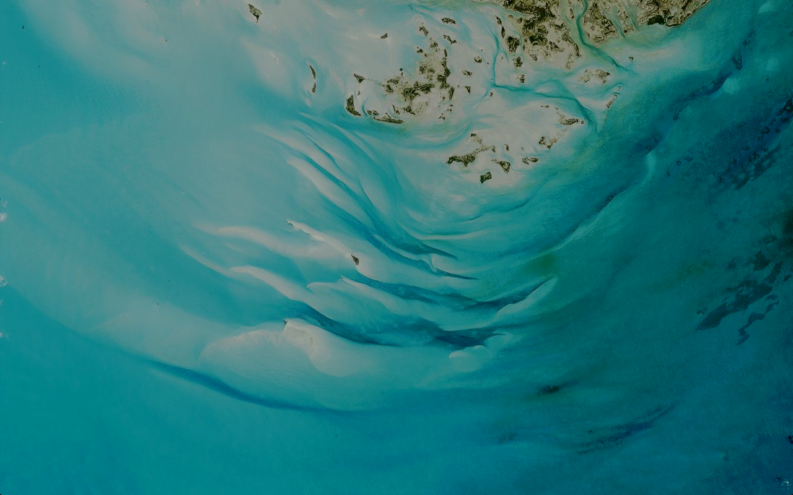
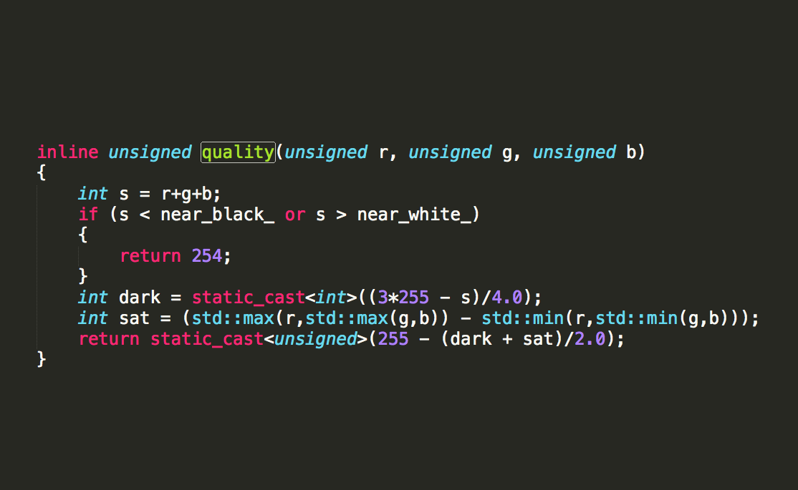
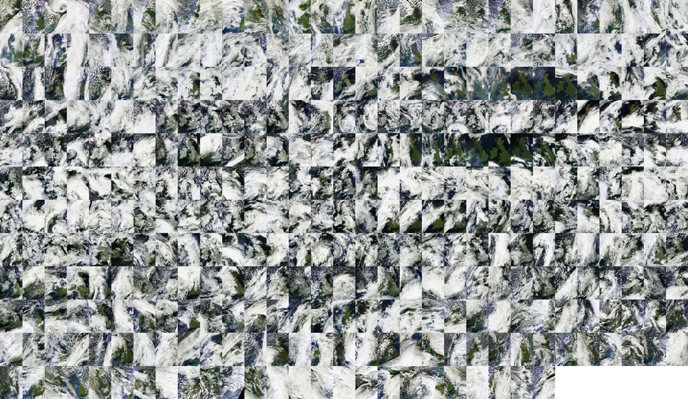

A Cloudless Atlas
Dane Springmeyer @MapBox
Basics
NASA LANCE-MODIS
z0 - z8
Several month effort
A team of 2+
History
In reality many years in the making
Open source collaboration at its best
MapBox Satellite Team
Charlie

Chris
Bruno
Goals
Cloudless
Seamless
Single spatial resolution
A living and dynamic planet
A gorgeous canvas
mapbox vs. google
mapbox vs. google
Methods
Download all the data (with NASA's help)
Push to Amazon s3 for storage
Break up work across virtual machines
For a given area
on a given machine
read in dozens of scenes
(Over time / even *seasons)
Score each pixel on `quality`

Sort pixels across every image
in memory
by the quality value

Output the highest quality scenes as new images
Mosiac images with GDAL VRT and style them in TileMill
Apply a blurred mask to oceans
Render web tiles
Challenges
Size
2 years of imagery
Nearly 400,000 images
16 megapixels each
2/3 terrabyte in total
~5 billion pixels
Accessing the imagery from NASA, only worked with good communication
Memory
For fast sorting you need contiguous, in-memory, multi-dimensional arrays
Each array over 9.5 GB!
Memory efficient c++ port + large Amazon Ec2s + sharded jobs
Tools
GDAL, the workhorse
ImageMagick, prototyping
Numpy, prototyping
Amazon S3, Storage
WEBP encoding
Mapnik, image i/o
C++, declouding algorithms
Next Steps
Apply methods to Landsat
Color matching between zooms/sources
More CPU and GPU parallization in code
Future work: Landsat
Thanks!
Dane Springmeyer @MapBox